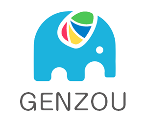

About
自己紹介
東峯一真 （Higashimine Kazumasa） 大阪府吹田市在住の38才、既婚、かわいい娘が2人。 つい先日、ゴルフ場で結婚指輪を失くし、妻のケアが大変。。
職歴
関西電力株式会社にて鉄塔に登る送電マン（最高148m）、 プロアマスノーボーダーを経て、UI/グラフィック/基板などのデザイン業務を20年、 大規模プロジェクト（電子CAD）開発責任者を10年、ベンチャー企業（Quadcept株式会社）で エバンジェリストとしてさまざまなピッチやセミナーなどで、スピーカー登壇を行いました。 現在は、CSi Global Alliance株式会社の取締役ですが、心機一転、起業準備をしています。
アワード
- 2013年 2月 グッドデザイン賞 受賞
- 2013年12月 Innovation Weekend 優勝
→電子CADのGUI、アイコンなどのデザイン全般を担当
→300人を超える投資家や起業家が集まるピッチ大会にて登壇
好きな言葉
- 自分の人生を他人に任せるな。
- 小さな家族を越えていけ。
- 恨みは水に流せ、ご恩は石に刻め。
課題
メッセージボード
この文章はダミーです。この文章はダミーです。 この文章はダミーです。この文章はダミーです。 この文章はダミーです。この文章はダミーです。

Twitterクローン
この文章はダミーです。この文章はダミーです。 この文章はダミーです。この文章はダミーです。 この文章はダミーです。この文章はダミーです。

モノリスト
この文章はダミーです。この文章はダミーです。 この文章はダミーです。この文章はダミーです。 この文章はダミーです。この文章はダミーです。
オリジナル
この文章はダミーです。この文章はダミーです。 この文章はダミーです。この文章はダミーです。 この文章はダミーです。この文章はダミーです。
リンク
いろんな方と繋がりたいと思っていますので、よろしくお願いいたします。